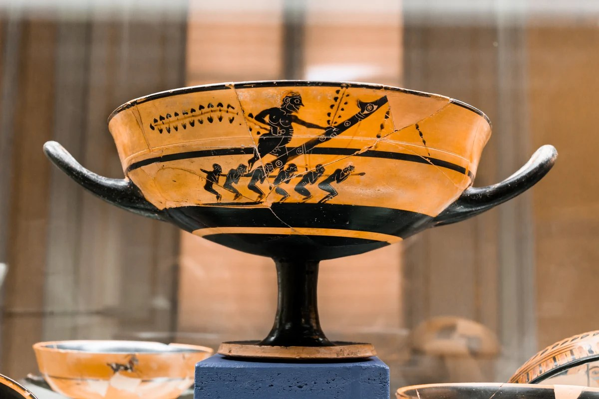
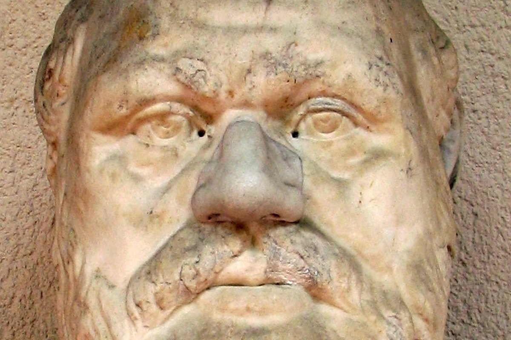
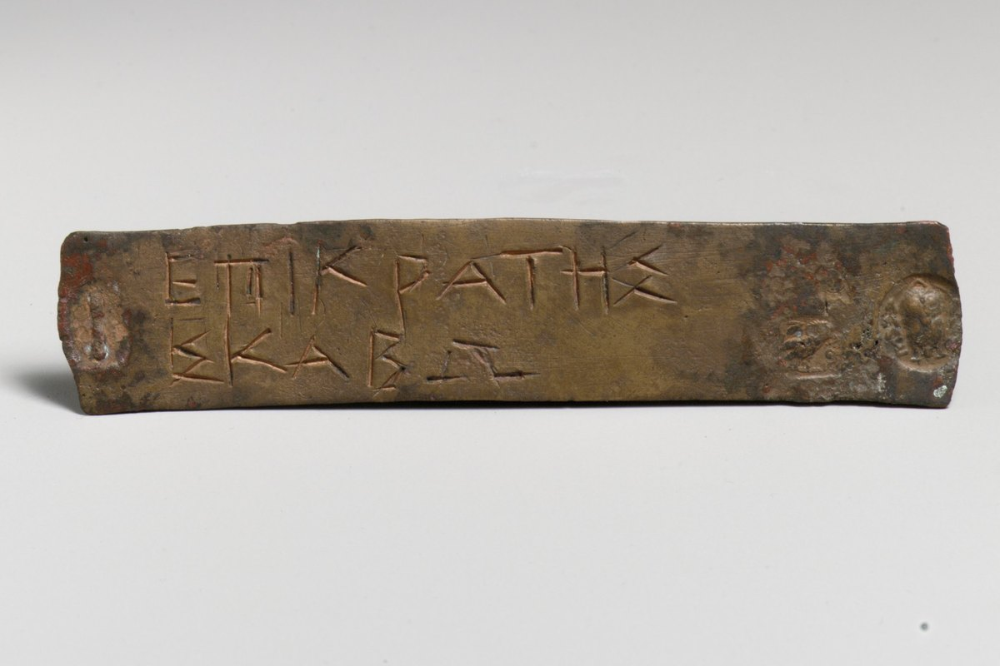
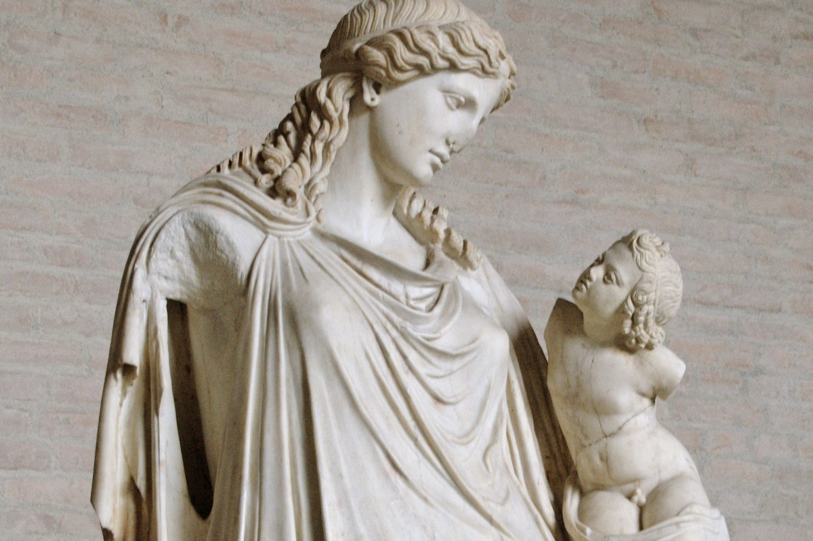
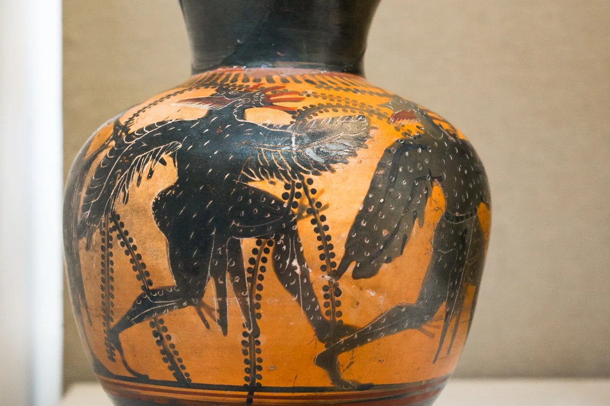
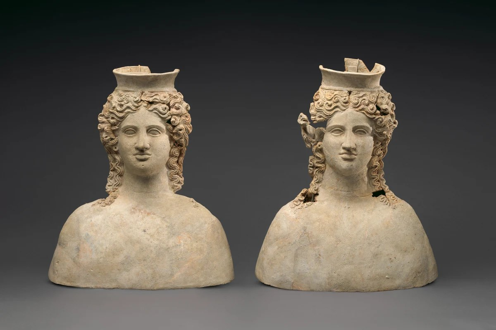

425 a.C.Gli Acarnesi
La prima commedia conservata integralmente e il primo testo digitale interrogabile in LexAr.
Esplora il corpus aristofaneo per data, agone e disponibilità digitale.
Ogni scheda conduce all’opera e ai materiali lessicali collegati.

425 a.C.La prima commedia conservata integralmente e il primo testo digitale interrogabile in LexAr.
 424 a.C.
424 a.C.
Una satira politica costruita intorno allo scontro tra il Paflagone e il Salsicciaio.

423 a.C.Il pensatoio di Socrate diventa il centro di una commedia su educazione, debiti e parola.

422 a.C.La passione giudiziaria degli Ateniesi è messa in scena attraverso un conflitto familiare.

421 a.C.Trigeo vola verso il cielo per liberare la Pace e restituirla alle città greche.

414 a.C.Una città tra cielo e terra trasforma una fuga da Atene in un progetto di potere.

411 a.C.Euripide tenta di difendersi dalle donne riunite durante la festa delle Tesmoforie.
 411 a.C.
411 a.C.
Le donne delle città greche stringono un’alleanza per costringere gli uomini alla pace.
 405 a.C.
405 a.C.
Dioniso scende nell’Ade per riportare ad Atene il poeta capace di salvarla.
 392/391 a.C.
392/391 a.C.
Le Ateniesi occupano l’assemblea e affidano a Prassagora un nuovo ordinamento della città.
 388 a.C.
388 a.C.
La ricchezza, guarita dalla cecità, promette di cambiare la distribuzione dei beni.
Modifica la ricerca o reimposta i filtri.
Un altro punto di vista
Colloca le commedie nel loro contesto storico e teatrale attraverso la linea del tempo di LexAr.
Apri la linea del tempo